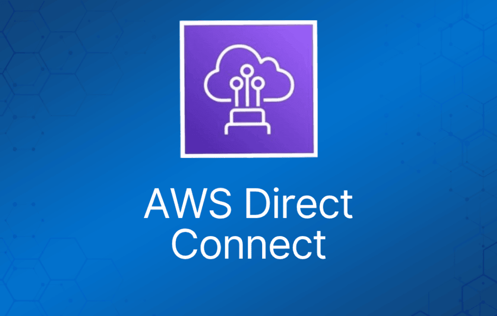
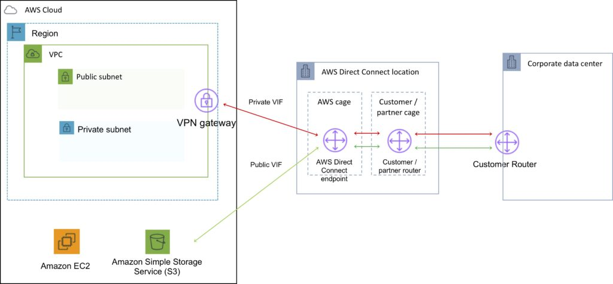
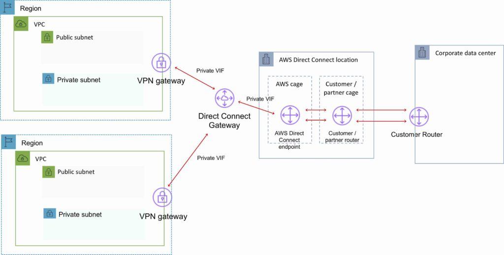

AWS Direct Connect 是一种网络服务，为通过 Internet 将客户本地站点连接到 AWS 提供了替代方案。
数据通过 AWS 与客户数据中心或企业网络之间的私有网络连接传输。
优势：
- 在大流量场景下降低成本。
- 提升可靠性（性能可预测）。
- 提升带宽（带宽可预测）。
- 降低延迟。
每条 AWS Direct Connect 连接可以配置一个或多个 virtual interface（VIF）。
Public VIF 允许访问公共服务，如 S3、EC2 和 DynamoDB。
Private VIF 允许访问你的 VPC。
Public VIF 上必须使用公有 IP 地址。
Private VIF 上必须使用私有 IP 地址。
Direct Connect 不支持二层（仅支持 L3）。
通过 Direct Connect 可以连接到该区域内的所有 AZ。
可以在 public VIF 上建立 IPSec 连接，连接到远端区域。
可以使用 route propagation 将客户端路由发送到 VPC。
每个路由表只能有一条 0.0.0.0/0（所有 IP 地址）条目。
可以绑定多个端口以获得更高带宽。
Virtual interface 可配置为连接 AWS 公共服务（如 EC2/S3）或私有服务（如 VPC 内资源）。
下图展示了 AWS Direct Connect 的组成部分：

Direct Connect 按端口小时数和数据传输量计费。
提供 1 Gbps、10 Gbps 和 100 Gbps（部分区域）规格。
50 Mbps、100 Mbps、200 Mbps、300 Mbps、400 Mbps 和 500 Mbps 的速率可通过 AWS Direct Connect Partner（APN Partner）购买。
使用 802.1q VLAN。
每条连接由客户路由器端口与 Amazon 路由器端口之间的单条专用连接组成。
要实现高可用，必须有 2 条 DX 连接——可以是 active/active 或 active/standby。
需要更新路由表，使其指向 Direct Connect 连接。
可以保留 VPN 作为备份，并设置更高的 BGP 优先级。
建议启用 Bidirectional Forwarding Detection（BFD）以加快故障检测和切换。
不能使用 Direct Connect 将本地 VLAN 扩展到 AWS 云中。
可以使用 Link Aggregation Group（LAG）将最多 4 个 Direct Connect 端口聚合为一条连接。
AWS Direct Connect 在 public 和 private VIF 上均支持单栈（IPv4）和双栈（IPv4/IPv6）配置。
连接 virtual interface 的技术要求：
- 一个公有或私有 ASN。如果使用公有 ASN，你必须拥有它。如果使用私有 ASN，必须在 64512 到 65535 范围内。
- 一个你选择的、未被使用的新 VLAN tag。
- 私有连接（VPC）—— VPC 的 Virtual Private Gateway（VGW）ID。
- 公有连接 —— 你为 BGP 会话分配的公有 IP（/30）。
AWS Direct Connect 不提供加密。
可以在 DX 连接之上建立 VPN 隧道来加密通过 DX 传输的数据。
- 在 DX 连接上运行 AWS VPN 连接可以提供稳定的吞吐量和保护数据的加密算法。
- 虽然通常使用 private VIF 连接 VPC，但在 DX 连接之上运行 IPSec VPN 时，必须使用 public VIF。
AWS Direct Connect Gateway
将属于同一 AWS 账户的 Virtual Private Gateway（VGW）和 Private Virtual Interface（VIF）分组。
Direct Connect Gateway 使你能够与任何 AWS 区域（AWS 中国区域除外）中的 VPC 对接。
你可以将 AWS Direct Connect gateway 与以下任一网关关联：
- 当你在同一区域有多个 VPC 时，关联 transit gateway。
- virtual private gateway。
可以共享 private virtual interface 与多个 Virtual Private Cloud（VPC）对接，从而减少 BGP 会话数量。
Direct Connect gateway 是全球可用的资源。
你可以在任何公有区域创建 Direct Connect gateway，并从所有其他公有区域访问它。
下图展示了 AWS Direct Connect Gateway 配置的组成部分：
